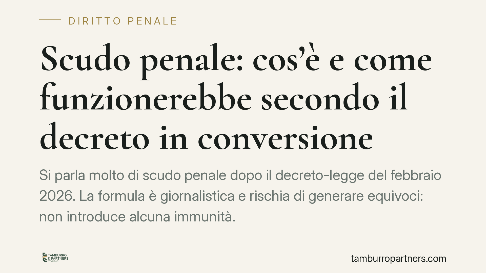

Scudo penale: cos'è e come funzionerebbe secondo il decreto in conversione
Si parla molto di "scudo penale" dopo il decreto-legge del febbraio 2026. La formula è giornalistica e rischia di generare equivoci: non introduce alcuna immunità. Secondo il testo in corso di conversione, prevede un percorso procedurale più rapido per chi ha agito in presenza di una causa di giustificazione. L'accertamento del pubblico ministero resta. Vediamo cosa dice la norma e cosa cambia in concreto.

Una premessa doverosa sulla fonte
L'espressione "scudo penale" circola sui media con riferimento all'art. 12 del D.L. 24 febbraio 2026 n. 23. Trattandosi di un decreto-legge recentissimo, il contenuto qui descritto va letto secondo il testo del provvedimento in corso di conversione: numero, articolazione e disciplina di dettaglio potrebbero mutare nel passaggio parlamentare.
Raccomandiamo quindi la verifica diretta sulla Gazzetta Ufficiale e il monitoraggio dell'iter. Un decreto-legge produce effetti immediati ma, ai sensi dell'art. 77 della Costituzione, perde efficacia sin dall'inizio se non è convertito in legge entro sessanta giorni dalla pubblicazione. La disciplina può inoltre essere modificata in sede di conversione.
Scudo penale: cosa non è
Il punto decisivo è terminologico. "Scudo penale" evoca una protezione che blocca il procedimento. Non è così.
Chi agisce in presenza di una causa di giustificazione commette comunque un fatto che, in astratto, corrisponde a una fattispecie di reato; è l'ordinamento a renderlo lecito. Ma stabilire se la scriminante ricorra davvero è questione di accertamento, non di automatismo. Per questo lo "scudo" non è un'immunità: il procedimento si apre, il pubblico ministero indaga, il giudice controlla.
Qui operano due principi costituzionali. L'art. 112 Cost. sancisce l'obbligatorietà dell'azione penale: il PM non può scegliere di non procedere. E la richiesta di archiviazione resta soggetta al vaglio del giudice per le indagini preliminari, a garanzia del controllo giurisdizionale.
Le cause di giustificazione (scriminanti)
Le scriminanti sono le situazioni in cui un fatto, pur tipico, non costituisce reato perché autorizzato o imposto dall'ordinamento. Il codice penale le colloca agli artt. 50-54:
- consenso dell'avente diritto (art. 50 c.p.);
- esercizio di un diritto o adempimento di un dovere (art. 51 c.p.);
- legittima difesa (art. 52 c.p.);
- uso legittimo delle armi (art. 53 c.p.);
- stato di necessità (art. 54 c.p.).
Lo scudo, nella versione del decreto, non amplia né modifica queste figure: presuppone che una di esse sia stata invocata.
Il meccanismo: registro separato e corsia accelerata
Secondo il testo del decreto, quando chi è indagato ha operato in presenza di una causa di giustificazione, è prevista l'iscrizione in un registro separato rispetto a quello ordinario degli indagati, con tempi più rapidi verso l'archiviazione.
La ratio è evitare che chi agisce nell'adempimento di un dovere — si pensi, in via esemplificativa, agli operatori delle forze dell'ordine — resti esposto a lungo allo stigma e agli oneri del procedimento ordinario quando la scriminante appare fin da subito plausibile.
Resta però fermo il nucleo garantista: l'iscrizione separata non chiude le indagini. Se gli accertamenti smentiscono la causa di giustificazione, il procedimento prosegue nelle forme ordinarie. La corsia accelerata riguarda i tempi, non l'esito, che dipende sempre dai fatti.
Implicazioni pratiche per chi è coinvolto
Per l'indagato che invochi una scriminante, il profilo critico si sposta sulla tempestività e qualità della documentazione. La valutazione accelerata si fonda su ciò che emerge nelle prime fasi: più il quadro è chiaro e documentato, più solida è la prospettiva di una definizione rapida.
Per gli operatori delle forze dell'ordine, il meccanismo può ridurre la pressione del procedimento, ma non sostituisce il rigore nella ricostruzione dell'intervento e nella redazione degli atti.
Cosa fare in concreto
- Documentate tempestivamente l'accaduto: annotazioni, verbali, fotografie, testimonianze. Il fattore tempo è decisivo nella fase iniziale.
- Ricostruite la dinamica evidenziando gli elementi che integrano la scriminante invocata (necessità, proporzione, attualità del pericolo).
- Conservate ogni elemento oggettivo: referti, tracciati, immagini da dispositivi, comunicazioni di servizio.
- Rivolgetevi subito a un difensore: l'impostazione difensiva nelle prime battute incide sulla collocazione del procedimento e sui suoi tempi.
- Monitorate l'iter di conversione del decreto: la disciplina potrebbe cambiare entro i sessanta giorni previsti dall'art. 77 Cost.
In sintesi
Lo "scudo penale" è una formula sintetica per un intervento che incide sui tempi del procedimento, non sulla responsabilità. Non protegge dall'accertamento: lo rende, nelle situazioni previste, più rapido. La sostanza resta la stessa di sempre — i fatti, e la loro prova.
---
*Contributo informativo a cura di Tamburro & Partners - Avv. Giuseppe Tamburro. Non costituisce parere legale.*
Ogni condominio ha una storia a sé.
Se gestisci un'amministrazione e vuoi un confronto su una specifica questione condominiale, scrivi allo studio. Ti rispondiamo entro un giorno lavorativo.